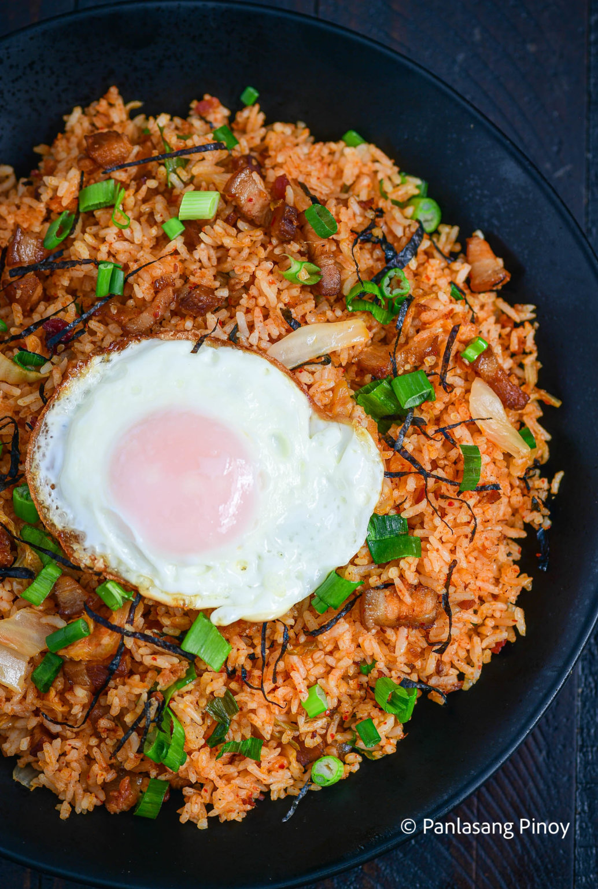

Kimchi Fried Rice

Kimchi fried rice made with cold rice and leftover pork adobo
Ingredients:
- 1 cup kimchi chopped
- 1 egg
- 4 cups white rice leftover
- 3 tablespoons kimchi juice
- 1 tablespoon Gochujang
- ¾ cup pork adobo chopped
- ¼ cup bacon bits
- 2 teaspoon sesame oil
- 2 teaspoons sesame seeds
- ¼ cup chicharron crushed
- 2 tablespoons nori strips
- 2 ½ tablespoons butter
- 2 tablespoons garlic infused oil
Steps:
- Melt butter in a wok. Add garlic infused oil.
- Once the bubbles subside, add the pork adobo. Cook until
the outer part gets a bit crispy.
- Add chopped kimchi and gochujang. Continue cooking for 2 minutes
- Put the leftover rice into the wok. Stir fry for 3 minutes.
- Pour-in the kimchi juice, add sesame oil, and sesame seeds. Cook for 2 minutes.
- Add bacon bits and crushed chicharon. Add the nori strips and green onions. Cook for 1 minute.
- Transfer to a serving plate. Top with fried egg.
- Serve. Share and enjoy!
Back to Homepage